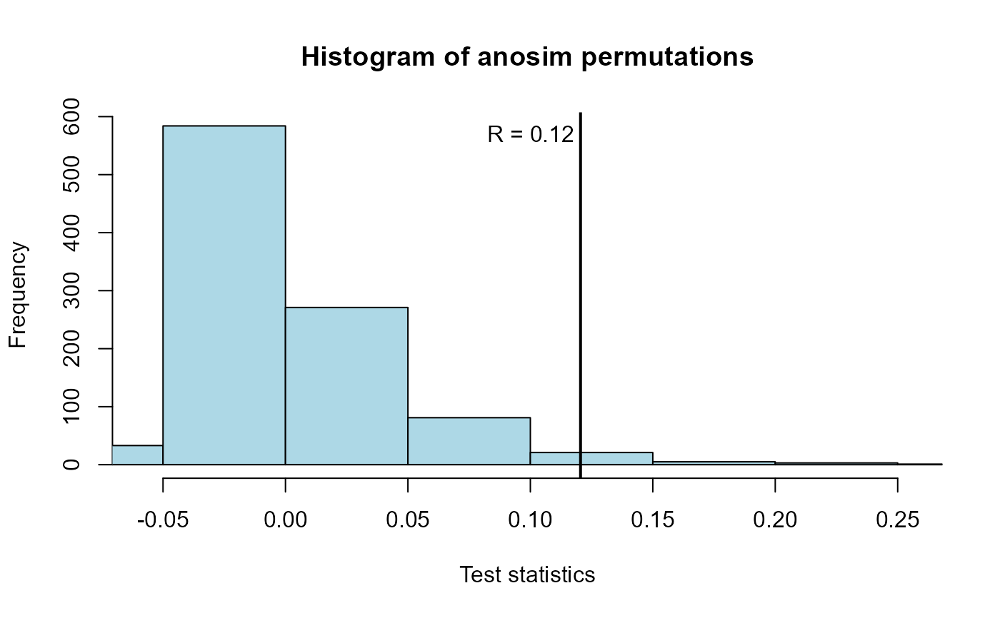

Plots the permutation histogram and test statistic produced by an anosim (nonparametric multivariate) test of differences between groups.
anosimPlot( ano.out, hcol = "light blue", title = "Histogram of anosim permutations" )
| ano.out | an |
|---|---|
| hcol | color of histogram |
| title | title of histogram |
Plots a histogram of the permutation test statistics representing the null hypothesis along with the observed test statistic from the data. The p-value is the proportion of test statistics equal to or more extreme than the observed test statistic.
Helsel, D.R., 2011. Statistics for Censored Environmental Data using Minitab and R, 2nd ed. John Wiley & Sons, USA, N.J.
Oksanen, J., Guillaume, F., 2018. Vegan: ecological diversity. CRAN R-Project. https://cran.r-project.org/package=vegan
data(PbHeron) # ROS model for each group PbHeron.high <- with(subset(PbHeron,DosageGroup=="High"),NADA::ros(Blood,BloodCen)) PbHeron.high <- data.frame(PbHeron.high) PbHeron.high$DosageGroup <- "High" PbHeron.low <- with(subset(PbHeron,DosageGroup=="Low"),NADA::ros(Blood,BloodCen))#> Warning: Input > 80% censored -- Results are tenuous.PbHeron.low <- data.frame(PbHeron.low) PbHeron.low$DosageGroup <- "Low" PbHeron.ros=rbind(PbHeron.high,PbHeron.low) # ANOSIM analysis library(vegan)#>#>#>#> #> Call: #> anosim(x = modeled, grouping = DosageGroup) #> Dissimilarity: bray #> #> ANOSIM statistic R: 0.1205 #> Significance: 0.02 #> #> Permutation: free #> Number of permutations: 999 #> #> Upper quantiles of permutations (null model): #> 90% 95% 97.5% 99% #> 0.0557 0.0860 0.1089 0.1427 #> #> Dissimilarity ranks between and within classes: #> 0% 25% 50% 75% 100% N #> Between 1 99.25 198.5 275.75 348 182 #> High 4 173.50 252.5 299.50 351 78 #> Low 8 60.00 108.0 160.50 242 91 #># Plot anosimPlot(PbHeron.anosim)